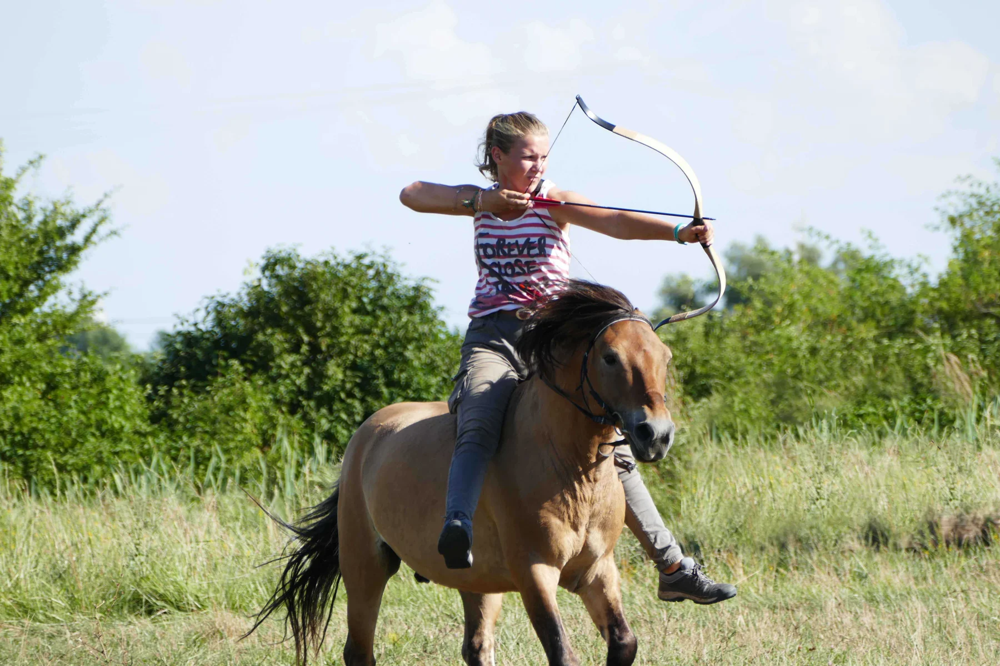
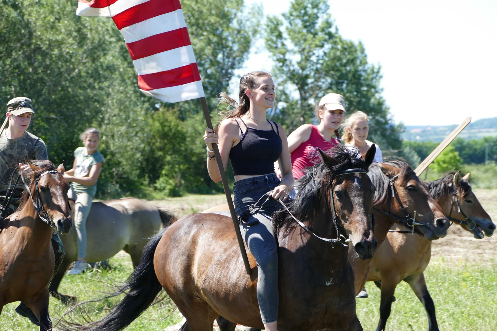

Lovaglás · Íjászat · HagyományőrzésÉlő hagyomány.
Élő hagyomány.
Szabadon,
lóháton.
A hagyományos Hun-Magyar lovaskultúra megismerése és gyakorlása. Ló és ember kapcsolata, természetes környezetben.

Lovasíjászat · Az egyesület fotóarchívumából25 év
Negyed évszázad a lovas hagyomány szolgálatában.
Az egyesület 2025-ös jubileumára megjelent visszatekintés.
Az egyesületNem csupán lovaglás.
Nem csupán lovaglás.
Egy szemléletmód.
„Nem vagyunk »lovarda« és nem vagyunk »üzleti vállalkozás«. Közhasznú kulturális és sportegyesületként működünk.”
Lovaglás és íjászat, lótartás és lovas életmód. Az egyesület munkájának alapja a Kelemen Zsolt szakmai irányításával végzett gyakorlati, kísérleti régészeti kutatómunka.
Ismerd meg az egyesületet
Intenzív lovas képzésAz első lépésektől
A képzés részletei
Az első lépésektől
a közös élményekig.
Ismerkedés a lovaglás alapjaival, kiválóan képzett lovakkal, természetes körülmények között.
5 / 10alkalmas képzés
8 éves kortóljavasolt részvétel
Archív képzési tájékoztató. Az aktuális lehetőségekről érdeklődj az egyesületnél.
Írások és gondolatok
Minden írás A tudás tovább él.
Az egyesület képekben
Fotógaléria